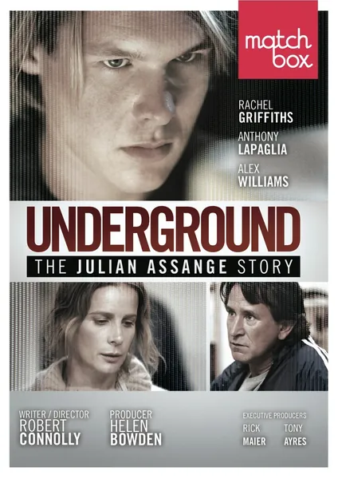

Фильм · 2012 · Биография, Драма
Мельбурн, конец 80-х: подросток Джулиан Ассанж — сын родителей, порвавших с театральной средой, — исследует компьютерные сети в составе хакерской группы International Subversives задолго до того, как интернет стал массовым явлением. Это история взросления, в которой юношеский азарт перерастает в идеологию: любопытство сменяется одержимостью идеей прозрачности, а та, в свою очередь, формирует личность человека, изменившего правила игры для целых государств. Телефильм снят по мотивам книги Сьюлетт Дрейфус задолго до того, как разразился самый громкий скандал вокруг WikiLeaks.
Melbourne, late 80s: teenager Julian Assange, son of theater-scene runaways, explores networks with the International Subversives hacking group long before networks went public. A coming-of-age story that turns from teenage thrill into ideology — how curiosity grew into an obsession with transparency, and obsession into the man who changed the rules for nation-states. A TV film based on Suelette Dreyfus's book, made long before WikiLeaks's biggest scandal.
← Вернуться в каталог IT Movies